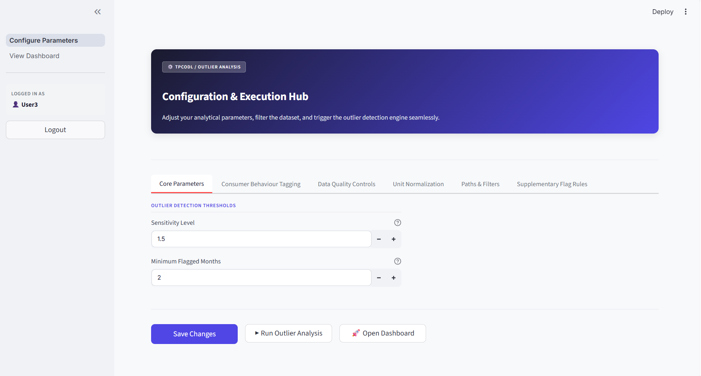
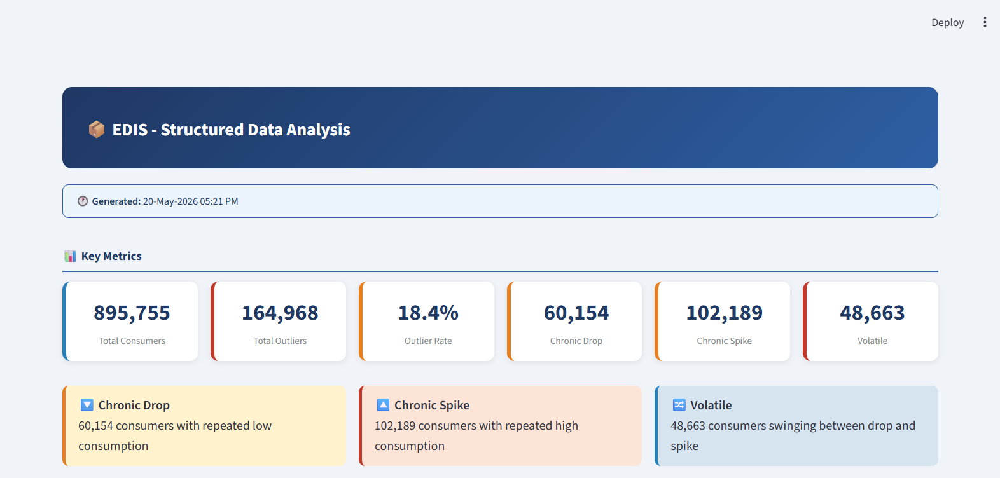
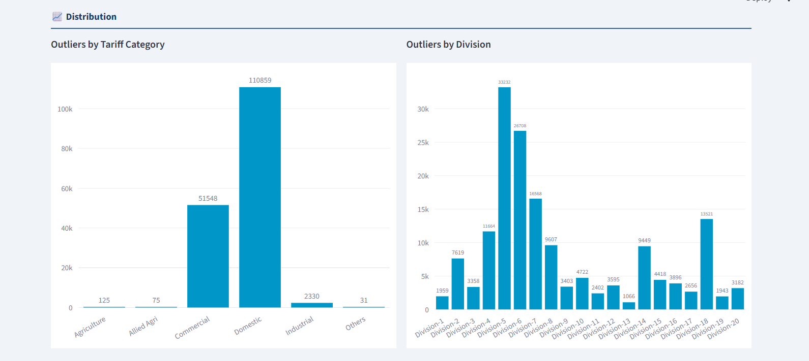
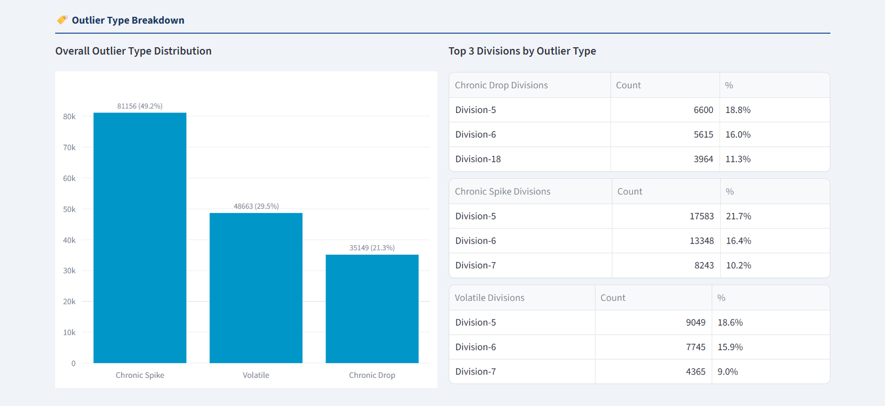
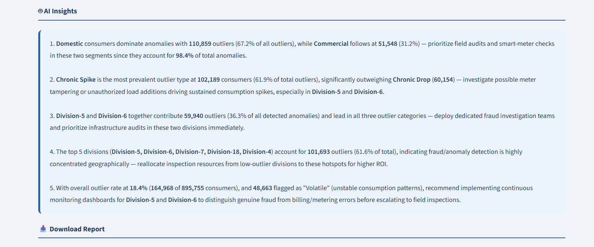

The Business Challenge
Power discoms generate millions of billing and consumption records every month. Hidden within this vast volume of data are abnormal consumption patterns, meter tampering, billing irregularities, and electricity theft that directly impact revenue.
Traditional investigation methods rely heavily on manual analysis and field experience, making fraud detection reactive, inconsistent, and resource-intensive. As a result, suspicious consumers often remain undetected for months, leading to significant revenue leakage and delayed corrective action.
Critical Operational Challenges
- Revenue leakage due to undetected electricity theft
- Difficulty analyzing millions of consumer records
- Slow manual investigations
- No prioritization of high-risk consumers
- Consumption anomalies hidden in historical data
- Delayed fraud detection and response
Traditional Investigation Workflow
Characteristics: Reactive • Time-consuming • Limited Coverage
The EDIS Fraud Analytics Solution
Proven AI-Driven Revenue Protection: By analyzing massive volumes of consumer billing, consumption, and operational data, EDIS empowers power discoms to proactively identify suspicious behavior and stop revenue loss at the source.
Through real-world field deployments across DISCOM networks, the platform evaluates historical trends, peer behavior, seasonal variations, and multi-factor risk metrics to deliver explainable, actionable intelligence to revenue recovery teams.
Data Convergence into EDIS Engine
Data Sources Analyzed
- Billing System Data
- Consumer Master Records
- Meter Readings & Intervals
- Vigilance Inspection Logs
- Multi-Year Historical Trends
EDIS Analytics Engine
Processes complex stream data to generate precise risk scoring and field-verifiable fraud alerts.
End-to-End Fraud Analytics Workflow
Core Capabilities Executed in the Field
Consumption Analysis
Detects sudden and uncharacteristic drops in energy consumption.
Behavioral Profiling
Learns baseline consumer usage patterns dynamically over time.
Peer Comparison
Compares target accounts against similar profiles within the same transformer node.
Dynamic Risk Scoring
Ranks consumers by probability of fraud to optimize field inspection teams.
Explainable AI Insights
Delivers specific evidence trails behind every flagged account for vigilance officers.
Continuous Audit
Monitors each billing cycle automatically, capturing emerging anomalies immediately.
Field Investigation Case Study
The following case highlights how EDIS successfully pinpointed high-probability revenue leakage during active DISCOM deployment, leading to targeted field verification and successful recovery.
Consumer Risk Assessment Profile (Field Execution)
AI Findings & Field Verification Results
- Identified 87% unexplained reduction in billed consumption
- Ruled out seasonal/operational downtime through climate & peer correlation
- Neighboring commercial units showed consistent energy draw
- High confidence fraud alert dispatched directly to field inspection queue
- Verified meter bypass upon site inspection and initiated penalty billing
EDIS Operational Control Center





Delivered Business Impact & ROI
Before vs After Execution
| Legacy Discom Operations | EDIS Analytics Implementation |
|---|---|
| Manual Excel analysis | Automated AI intelligence platform |
| Random/unprioritized inspections | Risk-driven, high-hit-rate field dispatch |
| Reactive loss detection | Continuous monthly audit & early alerts |
| Months of undetected theft | Rapid anomaly flagging within billing cycle |
| Siloed data view | Enterprise-wide revenue assurance visibility |
Key Quantified Benefits
Proven Revenue Protection
Direct reduction of commercial losses (AT&C) through precise detection of non-technical losses.
High-Efficiency Field Operations
Inspection hit rates increase dramatically, maximizing recovery per raid and reducing wasted site visits.
Resource Optimization
Vigilance squads deploy directly against pre-verified anomaly trails rather than random audits.
Strategic Executive Insights
Provides leadership with clear, data-backed dashboards tracking loss recovery progress across all circles.
Platform Snapshot & Deployment Summary
Deployment Overview
| Industry | Power Utilities / DISCOMs |
| Solution | Fraud Analytics & Revenue Protection |
| Platform | Enterprise Data Orchestration & Cognitive Intelligence System(EDIS) |
| Deployment | Enterprise Cloud / On-Premise Infrastructure |
| Data Integrations | Billing, AMR/AMI Metering, Consumer Master, Field Inspection Logs |
| Primary Users | Vigilance Officers, Revenue Assurance, DISCOM Leadership |